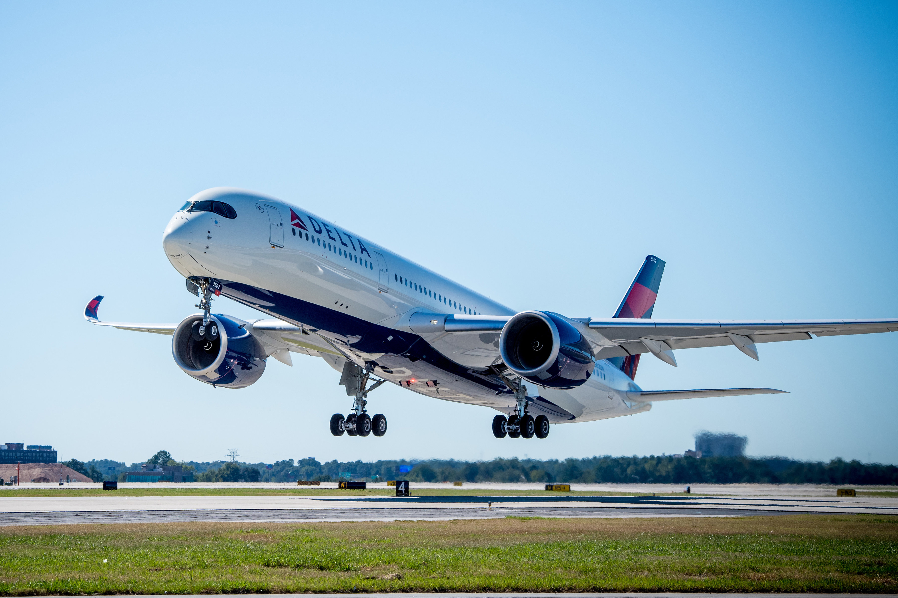
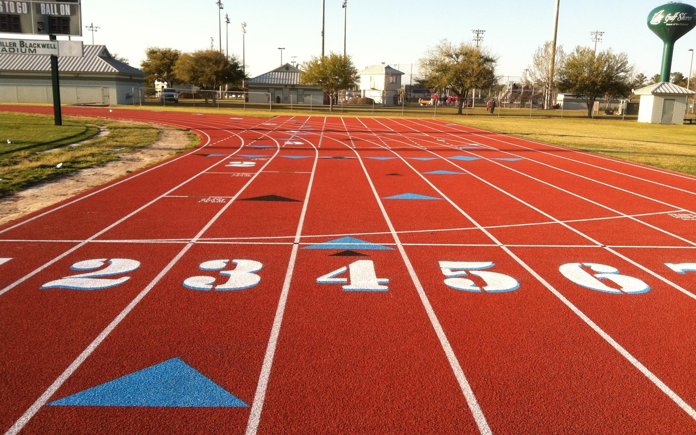
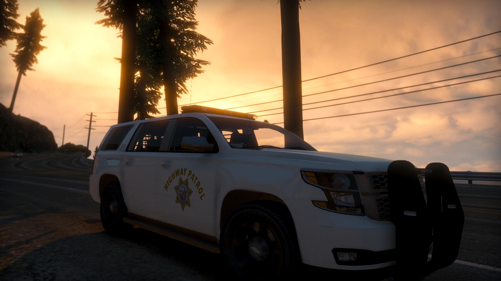
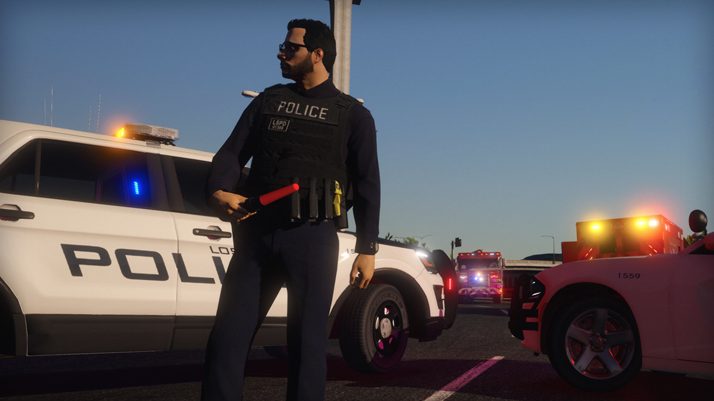
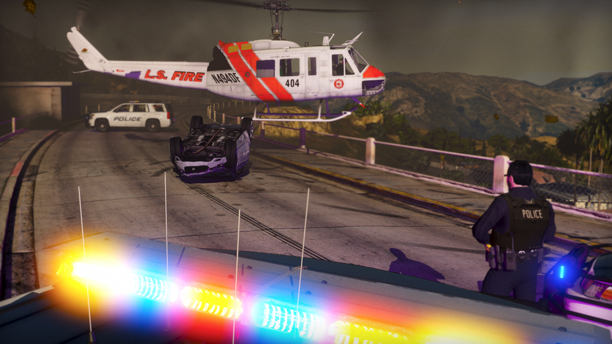
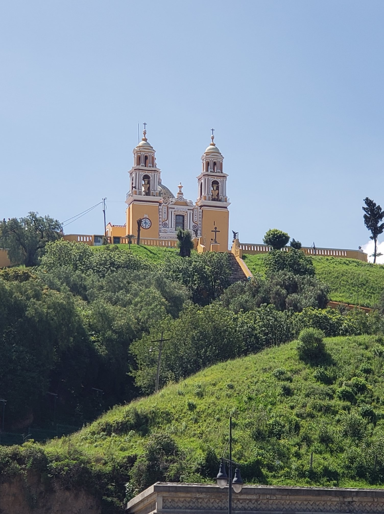
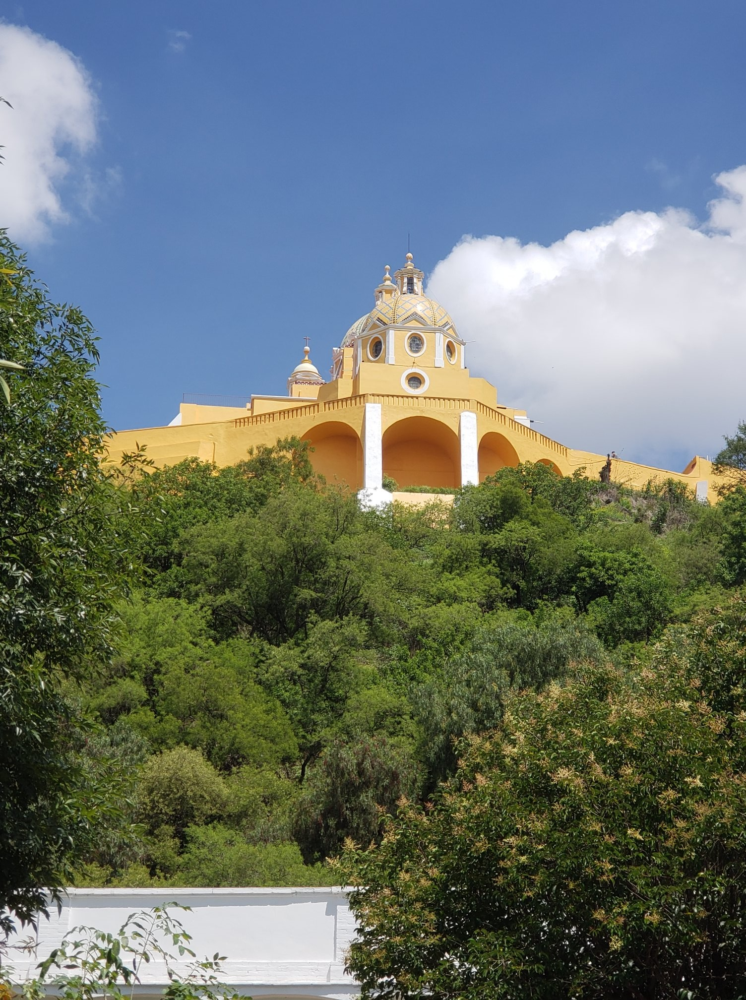
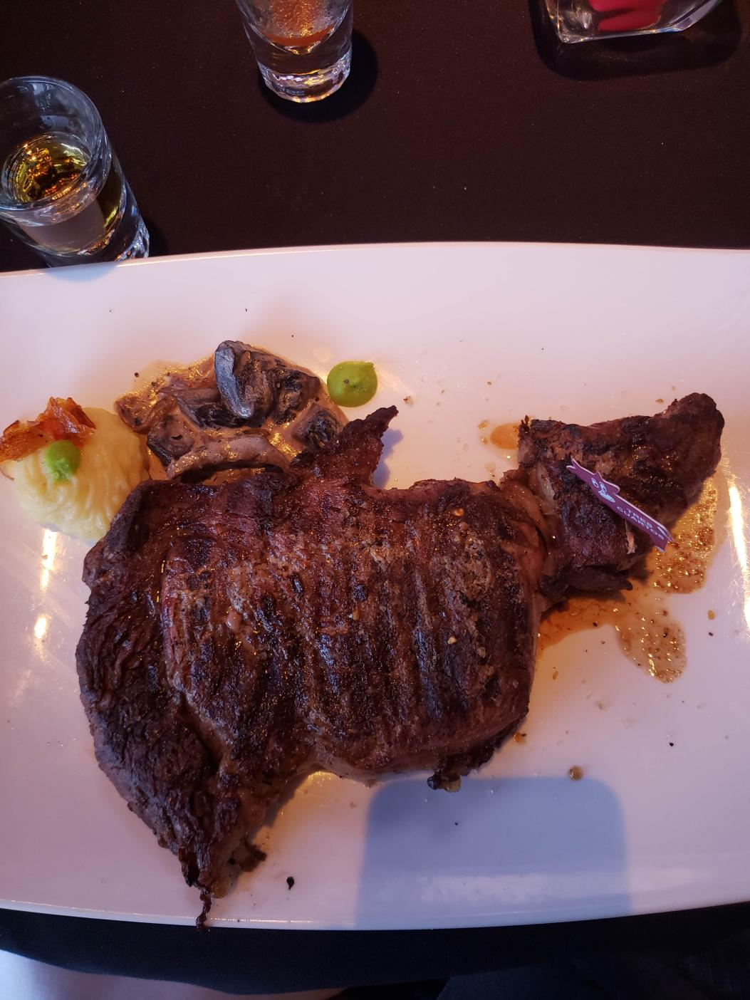
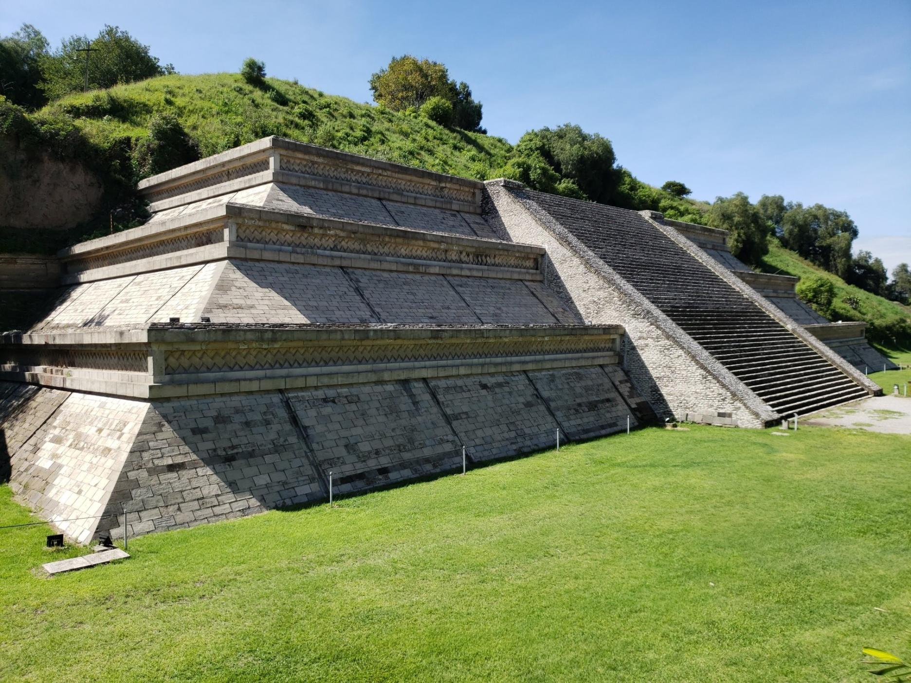

Portfolio
About Me:
Since a very young age, from the first moment I travelled by aircraft, I have been awed by aviaton. Since the age of 12, I have played flight simulators, ranging from FSX (Flight Simulator X), to X-Plane 11. At the age of 14, I got the opporunity to take the controls of a Cessna , a private plane. Upon reaching the age of 16, I plan to begin flight school and recieve my Private Pilots License. After High School, I plan to go to University for Commercial Aviation, and then become an employee for Air Canada.

Sports:
From the start of the 6th grade, I've loved running. Throughout my time at Meadowbrook Middle School, I ran Cross County, and now at RBHS, I sprint and do hurdles. I run the 100m, 200m, and 110m hurdles. I also enjoy to play Soccer, but do not play for a club or the school.

Hobbies:
Since the seventh grade of Middle School, I have been Director of a GTA-RP community, called JCRP. We run servers on a framework, built upon GTA, that provide RP (roleplay) games and activies for users. Our community consists of an Administration Team, Development Team, Staff Team, and Personal, or employee team. The server itself, is built upon Civilian and Law Enforcement roleplay. Officers, Deputies, and Troopers of the real world are engaged with our community, and use our roleplay services. Being the Community Director, I overlook the leads of departments, which consist of the Chief of Development, Head of Administration, and Forum Administrator(s). The development teams main job is to enhance the roleplay experience on the server by creating helpful scripts, and making sure the server is up to date with the latest releases. However, they also deal with Bot Development for Discord, resource development, asset development, and website development. The Administration teams job is to ensure that all members of the community are obeying the server guidelines and policies, and by doing so, they carry out disciplinary action. Within RP, the server consists of the San Andreas Highway Patrol, Los Santos Police Department, Los Santos Sheriffs Department, Los Santos Fire Department, and San Andreas Communications Department. We are a community with over 2,000 concurrent members, and over 300,000 game unique game connections, meaning 300,000 different people have played on our server. Below, you can find an example of GTA-RP.



My Life:
My Family:

I was born in Poway, CA, into a family of three, conisting of myself, my Polish/Canadian Mom, and my Assyrian Dad. When I was young, we moved back to Ontario, CA, for almost a year. The original reason we went to Canada, was to quickly get my moms passport renewed, however, it took a bit longer than we expected. While in Canada, we stayed at my Grandmas house, and while in Ottawa, the Capitol of Canada where we would get my moms passport renewed, we stayed in a Hotel. year after being in Canada, we moved back to the United States, to join my dads part of the family. Currently, my moms family lives in Poland and Canada, and my dads family lives in the United States, mostly San Diego.
School:
I am currently a sophomore at Rancho Bernardo High School who plans to attend school at a University that provides a Commercial Aviation program. University of North Dakota or Montana University are my primary choices. As you read in my bio, I have been in awe of the Aviation world from a very young age. During University, I will be getting my flight hour in, and by the end of the 4 years, will have obtained my Commercial License. After University, I plan to move to Canada, specifically Ottawa, Montreal, or Toronto, and become a Commercial Pilot for Air Canada.
Other:
Most Recent Vacation:





During the summer, my dad, uncle, grandpa, and I took a trip to visit my uncle down in Puebla, Mexico. My uncle owns an industrial business that models and creates autmobile parts for contracted companies. During our time there, we visited Churchs, temples, parks, and most importantly, restaurants. You can find pictures above ^